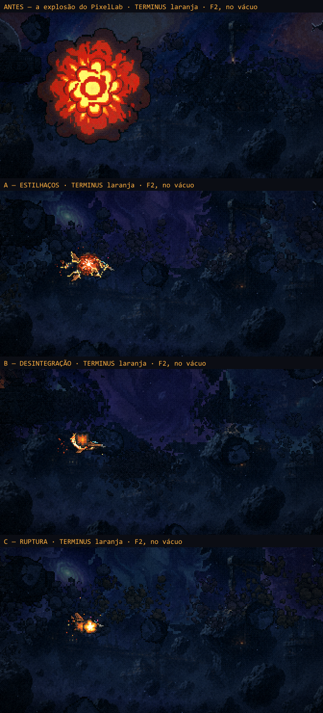
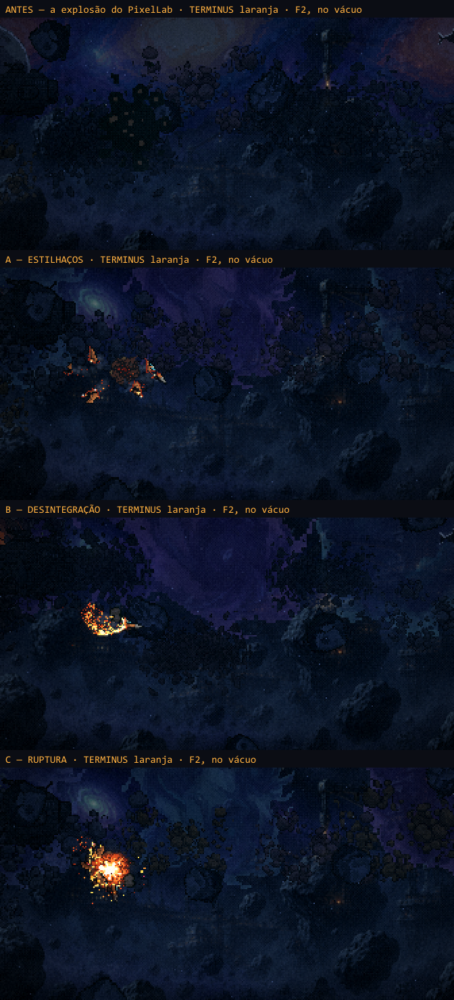
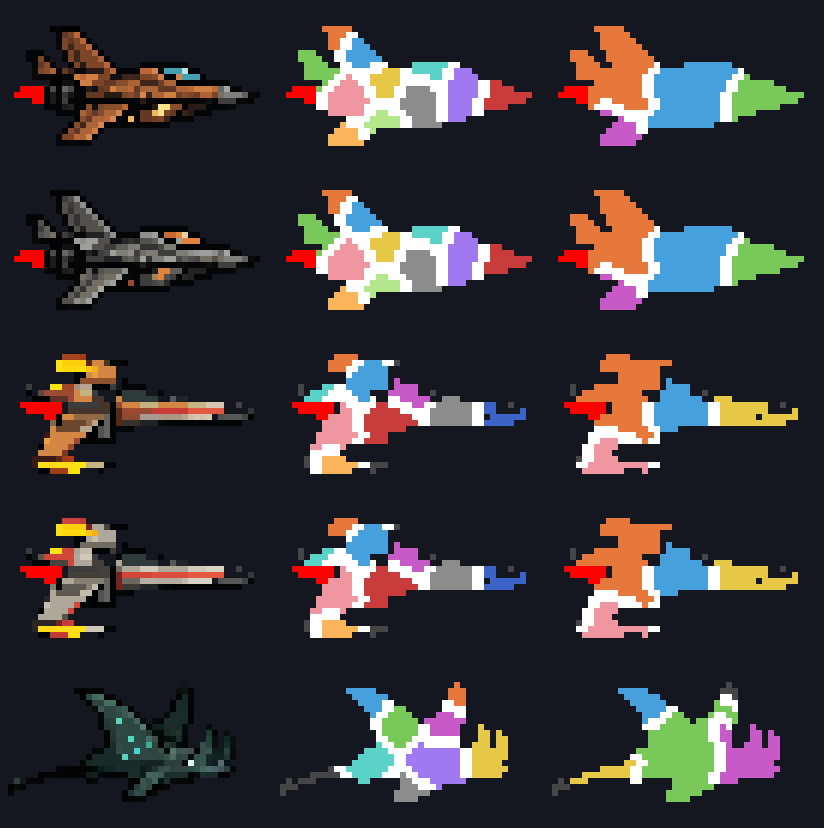

A morte da nave
26/10/2026 · ← o hangar · Cada nave com a sua morte, as lascas do casco nas vidas do meio, e embaixo a primeira rodada (as três versões, a X-Aelo sem a piscada e os nomes).
Cada nave com a sua morte
Você: "Como eu gostei de todos os efeitos, quero fazer com que cada tipo de nave tenha uma."
- X-AELO: C, ruptura.
- TERMINUS: A, estilhaços.
- CHARYBDIS: B, desintegração.
Vale para as duas pinturas de cada modelo. O tempo até o GAME OVER ficou como estava ("ficou cinemática a morte").
As lascas do casco (as vidas do meio)
A medida é o golpe, não as vidas. Cada vida perdida (menos a última) arranca do casco uma mordida de exatamente 24 pixels, uns 5% da nave. Ela sai da borda, em qualquer ponto entre o motor e o nariz. Com 3 ou com 6 vidas, o golpe é o mesmo. Nada depende de quantas vidas restam ou de quantas você juntou.
Cada nave lasca no estilo da morte dela, e é a antecipação dela:
- X-Aelo: um estalo e a peça sai inteira, girando, soltando lascas e fumaça.
- Terminus: a mordida fica branca e estoura em três estilhaços.
- Charybdis: a mordida queima da borda para dentro em brasas ciano, com uma descarga pequena.
A cicatriz: o buraco fica escuro no casco (na Charybdis, com um aro ciano) enquanto dura a invulnerabilidade, 1,4 s com a nave piscando, e depois some. Não fica até o fim da fase porque aí ela contaria golpes: com 6 vidas, a nave estaria toda mordida ainda com metade das vidas, e o aviso mentiria.
O resto:
- O aviso de "a próxima é a última" continua sendo a fumaça e o motor tossindo da última vida.
- A lasca entra no lugar da explosão do PixelLab que o golpe tinha. O clarão rosa da tela ficou.
- Quando a carta Casco segura o golpe, nada lasca: não se perdeu vida.

A primeira rodada: as três versões
Os destroços são os pixels da própria nave. O quadro que está na tela no momento da morte é lido de volta, cortado em pedaços com linhas tortas (nunca retas) e desenhado pixel a pixel na resolução do jogo. Por isso serve para as quatro escolhas do hangar e para a Charybdis, sem arte nova por nave.
- A cor: o fogo esfria pelas cores da própria explosão do PixelLab (amostradas da folha dela): branco, amarelo, laranja, vermelho, brasa, cinza. A Charybdis não pega fogo: ela se apaga na bioluminescência dela, em ciano, e no lugar da bola de fogo dá a descarga elétrica que o jogo já usa na água-viva.
- A câmera lenta: o golpe entra na velocidade normal e o mundo mergulha em câmera lenta no momento grande, como na morte de chefão. O cenário continua rolando por baixo (antes ele congelava).
- A F1: na atmosfera os pedaços caem e somem atrás do chão. No vácuo eles derivam.
- Só na última vida: perder uma vida no meio da fase continua com a explosão pequena, e a nave segue voando.
As três:
- A — Estilhaços: o casco fica branco por um instante e estoura em sete pedaços grandes, com as rachaduras em brasa e rastro de fumaça, saindo de uma bola de fogo pequena.
- B — Desintegração: uma frente de queima atravessa o casco do motor até o nariz. Cada pixel por onde ela passa se solta como brasa ou cinza. É o "se desintegre" ao pé da letra.
- C — Ruptura: o golpe, a nave perde o controle e capota, mais dois estalos ao longo do casco, o motor tossindo. Então ela se parte em três ou quatro partes grandes que saem girando, e a parte do motor continua cuspindo faísca.



A X-Aelo: só o fogo do motor
Os quadros 2, 3 e 5 acendiam as pontas das asas em amarelo. Eram as luzes falsas de "jato" de antes da chama de 04/10, que piscavam junto com as asas. Agora o corpo é o do quadro 0 (o limpo) nos nove quadros, e só a chama B (a que você aprovou) anda, como na Terminus. Vale para a pintura dela, a de osso e o jato azul dos Propulsores. O teste confere: nenhum pixel do casco muda entre os quadros.

Os nomes
X-AELO (o jato), TERMINUS (a "a") e CHARYBDIS (a manta: entre Charybdis e Manta, fiquei com Charybdis). Eles aparecem no hangar, embaixo da seta, e no painel da Doca, no lugar de "LINHAGEM HUMANA" e "LINHAGEM ALIEN".
O que ficou decidido
- As três ficam, uma por nave (acima).
- O tempo até o GAME OVER (3,3 a 3,8 s) ficou.
- As vidas do meio lascam o casco, uma mordida fixa por golpe (acima).
Para você olhar jogando: o tamanho da mordida (24 px) e quanto a cicatriz dura (1,4 s). São dois números em MORTE.golpe.
Como saiu
- O efeito:
src/systems/morte/:pedacos.ts(o corte, as rampas de calor, sem Phaser),MorteDaNave.ts(as três versões, desenhadas pixel a pixel em três telas: a fumaça, os destroços e o brilho) enumerosMorte.ts(os números e a versão padrão). - Na cena: o
gameOverdaGameScenecria a morte e espera ela inteira. Enquanto isso, o mundo continua andando em câmera lenta. A versão vem da nave (estiloDaNave). Para forçar uma: o registryestiloMorte(estilhacos,desintegraouruptura). - As lascas: o
damageShipcria umaMorteDaNavecomgolpe: true. A mordida é alascadepedacos.ts(24 px que crescem a partir da borda), e os números estão emMORTE.golpe. A cicatriz é desenhada logo antes do quadro, porque a física move a nave depois doupdatee, desenhada nele, a cicatriz ficaria um quadro atrás da nave. Filme:scripts/_morte/_filmar-golpe.mjs. - Os testes:
scripts/test-morte.mjs(o corte nas cinco naves de verdade),scripts/_morte/_testar-morte.mjs(a morte no jogo, nas três versões, na Charybdis, na F1 e na F4: a câmera lenta entra, o GAME OVER vem, o tempo volta ao normal) escripts/_naves/_testar-so-chama.mjs(só a chama anda). O filme é descripts/_morte/_filmar-morte.mjs. - A X-Aelo:
scripts/_naves/_jato-sem-balanco.mjs(agora com o corpo do quadro 0) e depois_pintar-jato.mjspara o osso. - Spec:
specs/2026-10-26-morte-da-nave-design.md.